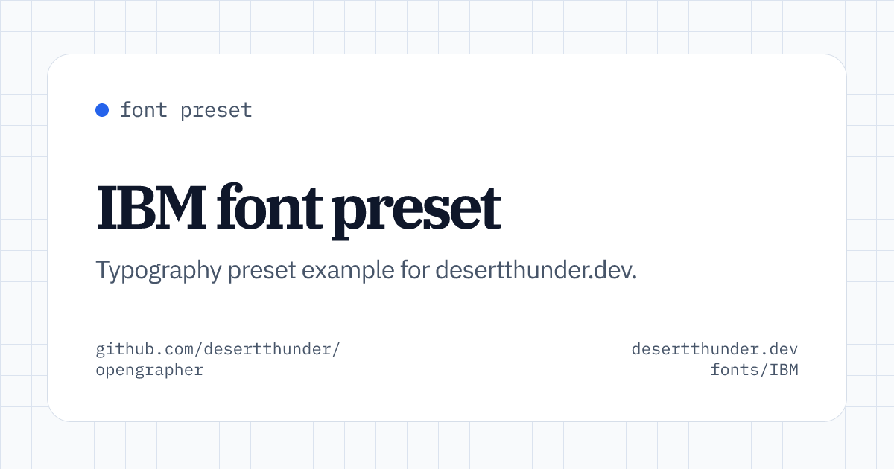
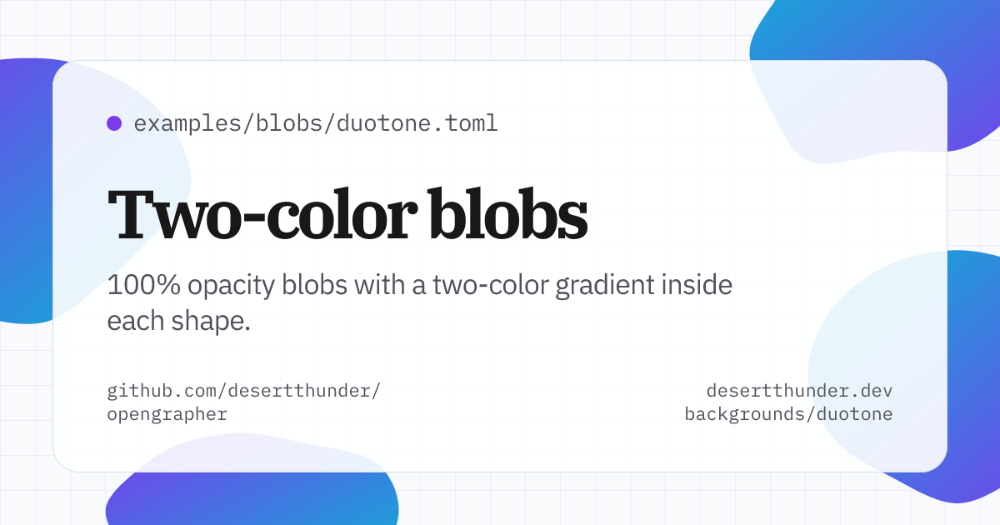
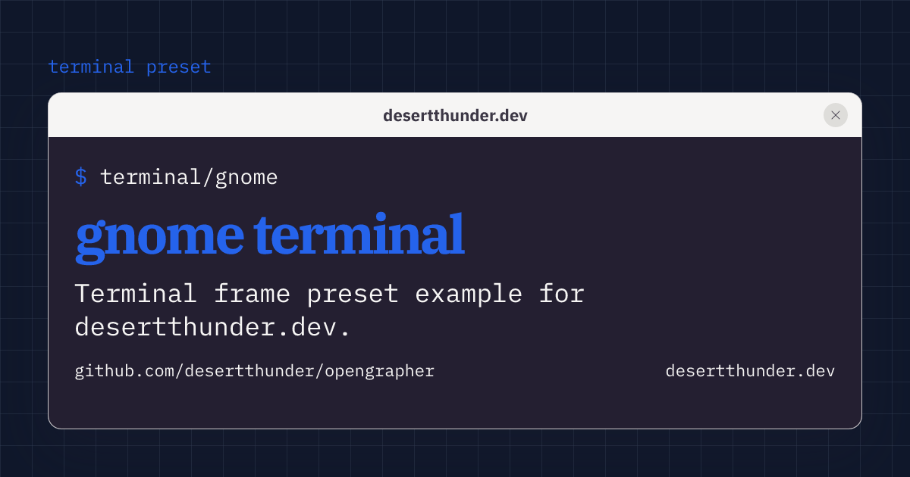

OpenGrapher
A Deno CLI for rendering bespoke 1200x630 Open Graph PNGs from TSX
templates. It is built for project pages, launches, docs sites, and any place
where a generic social image feels a little too generic.
Define the text, pick a template, choose a font preset, and write the image to
dist/og.png.
deno task og \
--title "Opengrapher" \
--description "Bespoke Open Graph images from TSX templates." \
--font-preset IBM \
--background graph-paper-light \
--out dist/og.pngWhat it does
- Renders Open Graph PNGs with
takumi-js. - Supports card and terminal-style templates.
- Fetches and caches font files at runtime.
- Reads TOML or JSON config files.
- Ships graph-paper and SVG blob background presets.
- Lets CLI flags override config values for one-off renders.
Examples
A few generated cards using built-in presets.



Render from config
Keep repeatable image settings in a config file and pass it to the CLI.
deno task og --config examples/marker.tomltitle = "Read with intention."
description = "A mobile browser for reading and thinking."
eyebrow = "github.com/stormlightlabs/marker"
site = "marker.stormlightlabs.org"
out = "dist/marker.png"
template = "card"
fontPreset = "Vercel"
background = "graph-paper-light"
terminal = "mac"
[theme]
accent = "#2d6cdf"
surface = "#f6f5f0"
ink = "#111111"
muted = "#77736b"
highlight = "#ffd85a"Templates
Use card for a clean project graphic with title, description, labels, and
background presets.
Use terminal when the image should look like a shell or app window. Terminal
frames include mac, windows, gnome, and win95.
deno task og \
--template terminal \
--terminal mac \
--title "Mac Terminal" \
--description "Reusable window chrome for OG images." \
--out dist/mac.pngFont presets
Opengrapher includes three font presets:
IBM: IBM Plex Serif, IBM Plex Sans, IBM Plex MonoVercel: Instrument Serif, Geist Sans, Geist MonoMonaspace: Monaspace Radon, Monaspace Neon, Monaspace Argon
Font files are downloaded on demand and cached in
.cache/opengrapher/fonts. Fontsource presets use pinned package versions.
Monaspace uses the pinned GitHub release asset githubnext/monaspace@v1.101.
Backgrounds
Graph-paper backgrounds are available in light, dark, indigo, and warm variants. Blob backgrounds are deterministic SVG overlays with soft, gooey, editorial, solid, and duotone presets.
The gooey preset uses SVG filter primitives instead of CSS filters so output is more reliable when rendered through Takumi.
CLI options
| Option | Description |
|---|---|
--config <path> |
TOML or JSON config file |
--title <text> |
Main image title |
--description <text> |
Supporting copy |
--eyebrow <text> |
Small label above the title |
--site <text> |
Site URL or label |
--repo <text> |
Repository label |
--path <text> |
Path or terminal command label |
--out, -o <path> |
Output path, defaults to dist/og.png |
--width <number> |
Width, defaults to 1200 |
--height <number> |
Height, defaults to 630 |
--font-preset <name> |
IBM, Vercel, or Monaspace |
--background <name> |
Background preset |
--template <name> |
card or terminal |
--terminal <name> |
mac, windows, gnome, or win95 |
Install locally
Clone the repo, then run the CLI through the Deno task.
git clone https://github.com/stormlightlabs/opengrapher.git
cd opengrapher
deno task og --helpOpengrapher is MIT licensed.